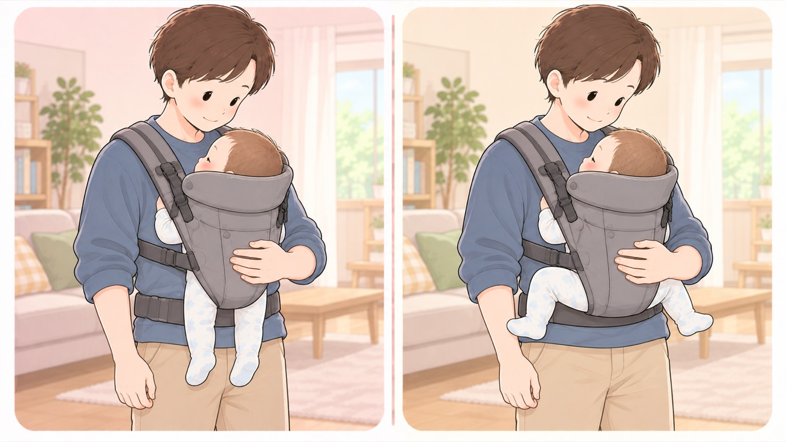

選ぶとき
抱っこひもは、脚がM字に開く形を選ぶ
股関節脱臼を防ぐため、両膝と股関節が曲がって外側に開く形のものを選ぶ
先天性股関節脱臼は、脚のつけ根の関節が外れる病気で、女の子や逆子だった子に多く見られます。母子健康手帳には、予防のために両膝と股関節が十分に曲がったM字型で、外側に開いて自由に動かせることが好ましく、抱っこは正面抱きにすると書かれています。買うときに、この形になるかどうかを見ます。

左は危険な例、右は安全な例です。- すること：首がすわる前から使えると書かれているものを選ぶ
抱っこひもには、首がすわってから使うものがあります。退院の日から使いたいなら、新生児に対応していること、頭と首を支える高い背もたれがあること、体を底上げする新生児用のクッションが要るかどうかを、取扱説明書で確かめます。 - すること：両ひざが股より高く上がり、M字に開く形になるものを選ぶ
お尻から太ももまでを布が支える幅があるかを見ます。脚が下にまっすぐ垂れる形は、股関節に負担がかかります。 - すること：首がすわる前は、対面抱きで使う
赤ちゃんの顔が親のほうを向き、頭と首が本体の高い背もたれで支えられる形です。前向き抱きは首がすわってからです。 - すること：買ったら、取扱説明書どおりに体に合わせる
国民生活センターの検証では、ゆるい装着は説明書どおりの装着よりすき間が大きくなり、落下の危険が高まりました。装着後にサイズを調整していなかった事例があります。 - しないこと：日本語の説明書がないものを選ばない
海外製品の並行輸入では、日本語の取扱説明書がないことがあります。海外の規格は適用月齢や設計の考え方が国内の基準と異なります。
🛍 グッズの選び方
PR- 首がすわる前から使えるものを選びます。首すわり後からの製品だと、退院の日には使えません。
- 新生児のうちは、体を底上げして頭の位置を上げる専用のクッションを入れて使う製品があります。これを足さずに使えるものだと、手順が1つ減ります。
- メーカーによって、抱き方を変える手順の扱いが異なります。日本語の説明書が付くものを選びます。
- 小柄な人は、本体の小さいものだと赤ちゃんの位置が下がりにくいです。
- エルゴベビー ADAPT SoftFlex（新生児から・専用クッション不要）新生児用のクッションを足さずに、そのまま使えるAmazonで見る →
- ベビービョルン 抱っこひも HARMONY（0か月〜）0か月から。対面抱きで顔が見えるAmazonで見る →
- ベビービョルン ベビーキャリアMINI Air（新生児〜12か月目安）新生児期に特化。装着が少ない手順で済むAmazonで見る →
- エルゴベビー OMNI Deluxe Mesh🏅 マザーズセレクション大賞2025（Ergobaby OMNIシリーズ）Amazonで見る →
リンクはAmazonアソシエイトリンクです。当サイトはアフィリエイトプログラムに参加しています。Amazonのアソシエイトとして、当サイトは適格販売により収入を得ています。 選び方の方針
この項目の根拠
- 母子健康手帳 任意様式「新生児（生後約４週間までの赤ちゃん）」（こども家庭庁 母子健康手帳情報支援サイト・PDF）（新しいタブで開きます）
先天性股関節脱臼は脚のつけ根の関節がはずれる、女児や逆子（骨盤位）に多い病気であること。予防には赤ちゃんの両脚が両膝と股関節が十分曲がったM字型で外側に開いて自由に動かせることが好ましいため、抱っこは正面抱きとし寝ている姿勢等にも気をつけること。 - 赤ちゃんの股関節脱臼 ─ 正しい知識と早期発見のために（日本小児整形外科学会）（新しいタブで開きます）
赤ちゃんはO脚で、カエルのようにお股をM字に開いているのが正常であり、股関節の動きを自由にさせる扱いがよいこと。 - 抱っこひもからの子どもの落下に注意！─生後数カ月の子どもが頭蓋内損傷などの重篤なけがを負っています─（国民生活センター）（新しいタブで開きます）
抱っこひもの事故では落下が多数を占め、0歳児とくに低月齢で重篤なけがにつながること、装着後にサイズ調整していなかった事例があること、ゆるい装着では取扱説明書どおりの装着よりすき間が大きく落下の危険が高まるという検証結果、取扱説明書に従って正しく装着すること。 - 抱っこひも等の安全対策 東京都商品等安全対策協議会 報告書（東京都・PDF）（新しいタブで開きます）
メーカーごとに安全対策の考え方と製品の仕様が異なり注意事項・禁止事項にも差があること、海外製品の並行輸入では日本語の取扱説明書がない場合があること、海外規格は適用月齢や設計思想がSG基準と異なること。